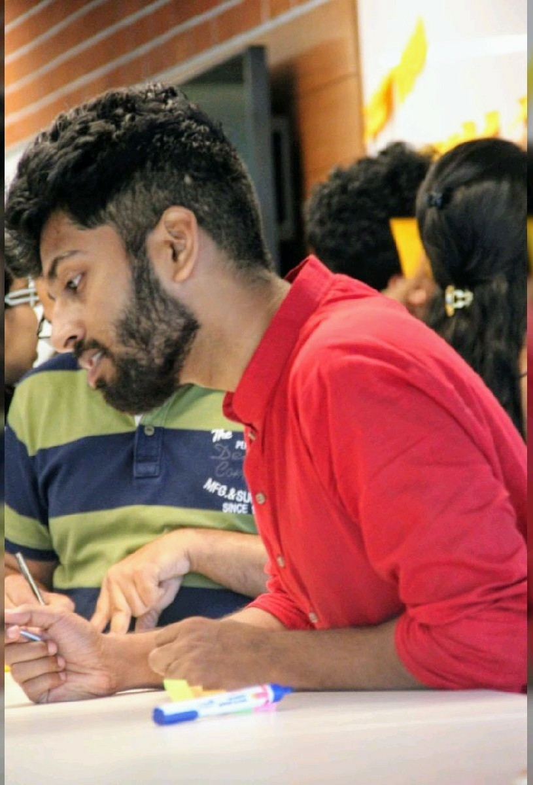

Hey, this is my homepage, so I have to say something about myself. Sometimes it is hard to introduce yourself because you know yourself so well that you do not know where to start with. Let me give a try to see what kind of image you have about me through my self-description. I hope that my impression about myself and your impression about me are not so different. Here it goes.I am a person who is positive about every aspect of life. There are many things I like to do, to see, and to experience. I like to read, I like to write; I like to think, I like to dream; I like to talk, I like to listen. I like to see the sunrise in the morning, I like to see the moonlight at night; I like to feel the music flowing on my face, I like to smell the wind coming from the ocean. I like to look at the clouds in the sky with a blank mind, I like to do thought experiment when I cannot sleep in the middle of the night. I like flowers in spring, rain in summer, leaves in autumn, and snow in winter. I like to sleep early, I like to get up late; I like to be alone, I like to be surrounded by people. I like country’s peace, I like metropolis’ noise; I like the beautiful west lake in Hangzhou, I like the flat cornfield in Champaign. I like delicious food and comfortable shoes; I like good books and romantic movies. I like the land and the nature, I like people. And, I like to laugh.I always wanted to be a great writer, like Victor Hugo who wrote "Les Miserable", or like Roman Roland who wrote "John Christopher". They have influenced millions of people through their books. I also wanted to be a great psychologist, like William James or Sigmund Freud, who could read people’s mind. Of course, I am nowhere close to these people, yet. I am just someone who does some teaching, some research, and some writing. But my dream is still alive.